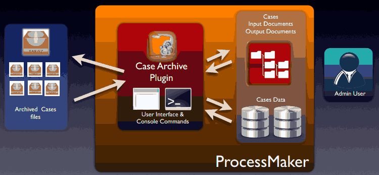
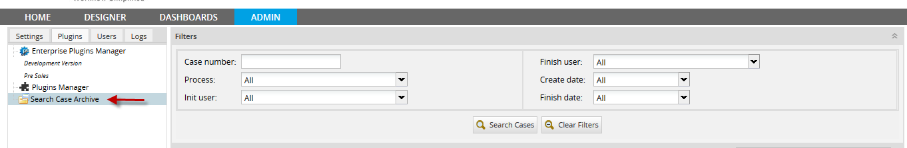
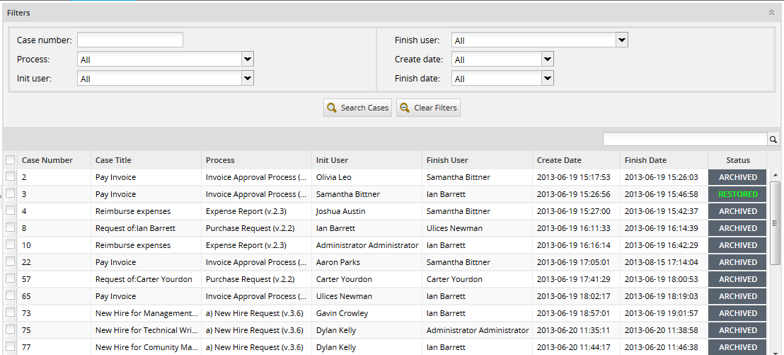
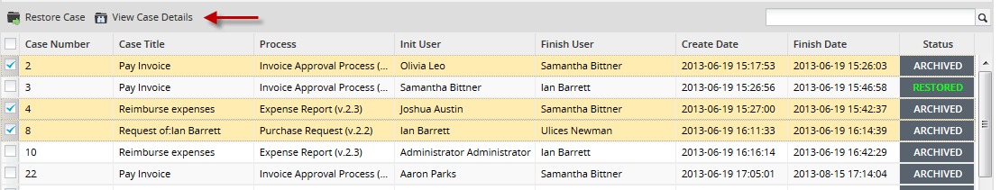
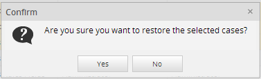
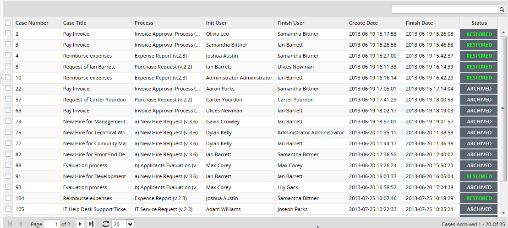
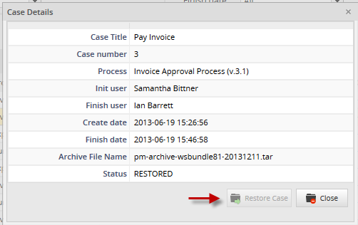
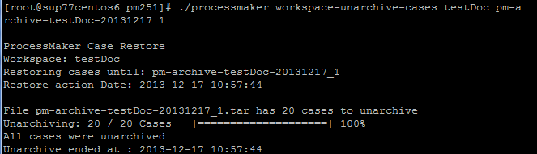
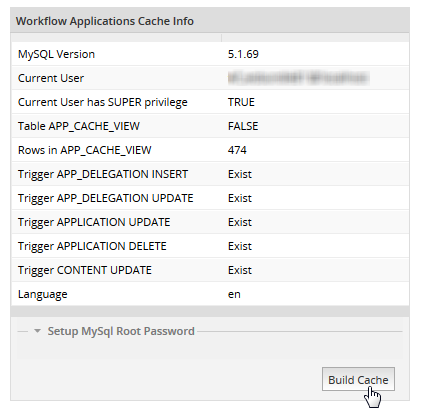

Plugin Version:
3.0 |
Release Notes
Plugin Version:
3.0 |
Release Notes
Overview
In running systems, where a lot of information is manipulated every day, data is very important to be consulted, but not all data is required to be stored in the database, specially old data. That's why, old information is archived to get historical data. In past version of ProcessMaker, cases can't be archived.
The Case Archive Plugin is designed to empower ProcessMaker in order to provide the functionality to archive and unarchive old cases, thus the data in the ProcessMaker tables is reduced and the database queries resolution gets faster.
Moreover, Case Archiving is a plugin designed for efficient database management. The case archiving functionality decreases the data size within the database, allowing to decrease source consuming and database stress, while the unarchiving functionality allows to restore all or specific archived cases.
Its main characteristics are:
- Allows ProcessMaker administrators to archive large case loads.
- Allows for better maintenance and audit controls for ProcessMaker instances.
- Ensures that large scale implementations can offload old cases from the main inbox, in order to ensure speed at high scale
- Cases can be restored to user inboxes at any time by the administrator.
- Allows to decrease source consuming and database stress.
How the plugin works
The following graphic describes how the Case Archive plugin works, and also the relation between its components:

1. By using the user interface, users will be able to archive cases using console commands. Archived cases will be compress into a .tar file.
2. Cases can be unarchived by using the user interface, which will be able once the plugin is enabled.
Requirements
ProcessMaker Compatibility
This plugin is fully compatible with the following ProcessMaker versions:
- v. 2.5.2.x
- v. 2.8.0.x
- v. 3.0.x
- v. 3.1.x
- v. 3.2.1
- v. 3.2.2
User Requirements
- Administrator permissions to use the plugin.
- Root permissions to access into the server
Installation and configuration
- The plug-in will be available once imported the Enterprise plug-in with the corresponding license, it's necessary activate it once it's installed.
- Finally, enable the Plugin.
Once the plug-in is enabled, a new option will be added under ADMIN > plugins section:

Also, the search criteria interface will enable where cases can be unarchived.
Considerations before starting
- It is not possible to archive cases from multiple workspaces.
- The process of archiving cases can be executed
- Only 20 cases can be restored at the same time, using the user interface.
- It is not possible to archive cases if ProcessMaker has a Solr implementation in the server.
- The .tar file generated when cases are archived, are not included within the backup file you generate in ProcessMaker by executing the workspace-backup command.
How to archive and unarchive cases
The Case Archive plugin has two options, archive and unarchive cases depending on what is your requirement.
Archiving cases
It is recommended to take the following considerations before starting archiving cases:
- The process to archive cases has to be done by using the command line, that's why user who will execute this, will need to have access to the server as a root user.
- Only cases with COMPLETED status can be archived.
- ProcessMaker will be blocked while the process to archive cases is executing. It means, users cannot login and work in ProcessMaker until the archive process will finish.
- If you stop the archiving process, next time you start it again, it won't start from the begging, it will continue from where it was stopped.
To archive cases, login as "root" or the user with administrative powers and go to the following path:
Where:
- workspace_name: Name of the workspace where cases will be archived.
- archive_date: Date until cases will be archived. Ex. 2013-10-30 That will archive cases created one day before: 2013-10-29
Executing the command, cases will start to be archived as follows:

In the example, the workspace testDoc and the date: 2013-12-17 were defined, it means that all cases that belong to testDoc workspace and executed until 2013-12-16 (note that you have to define one day later in order to archive cases) will be archived.
When executing the command, you will see a 3 steps and a report of what is executing in each step:
- Step 1:Check unarchived cases you will see the number of unarchived cases. In the case of the example, only one case was unarchived.
- Step 2: Verifying necessary folder permissions It will verify if the folder has the necessary permissions, if not, cases won't be archived, and the command must be executed once more, using the a user with root permissions.
- Step 3: Archiving Step where cases are archiving, in the case of the example 20 cases were archived with no errors
- Report: A final report, of what implies the case archive process, will display:
Archived Cases Storage
.tar file will be stored in the following location:
Unarchiving Cases
There are two possibilities to unarchive cases:
Using the user interface
All archived cases will be listed under Admin > plugins > Search Case archive option. There you will have the following interface:

The interface is divided in two parts:
1. Search case archive interface: It is possible to search archived and restored cases using different search criteria.
2. Case archived list: The list of archived cases will list, select one or more cases to unarchive
Search case archive interface
This interface helps user to search archived and unarchived cases by using some criteria, this will help to search for specific information, specially when a great number of cases were archived.
- Case Number: It allows users to search cases by case number.
- Process: It allows users to search cases by process name. Remember that the process list will be extracted from the available process created in the current workspace.
- Init User: It allows users to search cases by selecting the user who started the case.
- Finish User: It allows users to search cases by selecting the user who finished the case.
- Create Date: It allows users to search cases by selecting the date when the case was created
- Finish Date: It allows users to search cases by selecting the date when the case finished.
Case Archived List
The list of archived cases will list, by selecting one of more cases from the list, the following options will enable:

Where:
- Restore Cases: This option helps you to restore cases. Select the cases, by marking the checkboxes located at the left side of the panel, you want to restore and then click on Restore Cases option, the following window confirmation will display:

By accepting cases restoring, the following window confirmation appears with the information of the cases restored:

- Remember that only 20 cases can be restored at a time.
Once cases were restored, their status will change to RESTORED as you can see in the following image:

In this version, the process to unarchive cases works per page, it means, only cases selected in the current page, can be unarchived.
- Note If it is required to archive cases already unarchived, they will be deleted and archived in the same tar file; therefore, they won't be duplicated.
- View Details It shows a brief summary of the case details. Select one case and click on View Details and the following information will display:

If the case is not archived, the option Restore Case will be enabled, if it is restored, the option will be disabled:

Using the command line
Some ProcessMaker Administrators prefer to use command line to execute commands, that's why the process to unarchive cases can be executed using a ssh client (eg. Putty). The procedure to unarchive cases is the same as the one you use to archive cases.
It is recommended to take the following considerations before starting unarchiving cases:
- Only users who has rootpermissions could execute this command.
- ProcessMaker will be blocked while the process of unarchiving cases is executing. It means, users cannot login and work in ProcessMaker until the unarchive process will finish.
To unarchive cases, login as "root" or the user with administrative powers and go to the following path:
Where:
- workspace_name: Name of the workspace where cases will be unarchived.
- tarFile_name: Name of the file where cases are archived.
For instance, if you have the workspace named testDoc and the tar file named pm-archive-testDoc-20131217_1
Cases will start to be unarchived as follows:

Issues when displaying case title
In version v2.0.182. of this plugin, when cases are unarchived, their corresponding case titles are note generating correctly, this will be solved on further versions of the plugin. However, there is a workaround to solve this; the instructions below will show you how to display the case titles correctly:
As a user administrator, login ProcessMaker and go to ADMIN>Settings, choose the option Cases List Cache Builder and click on Build Cache:

That action will help to regenerate the APP_CACHE_VIEW table thus the case titles.